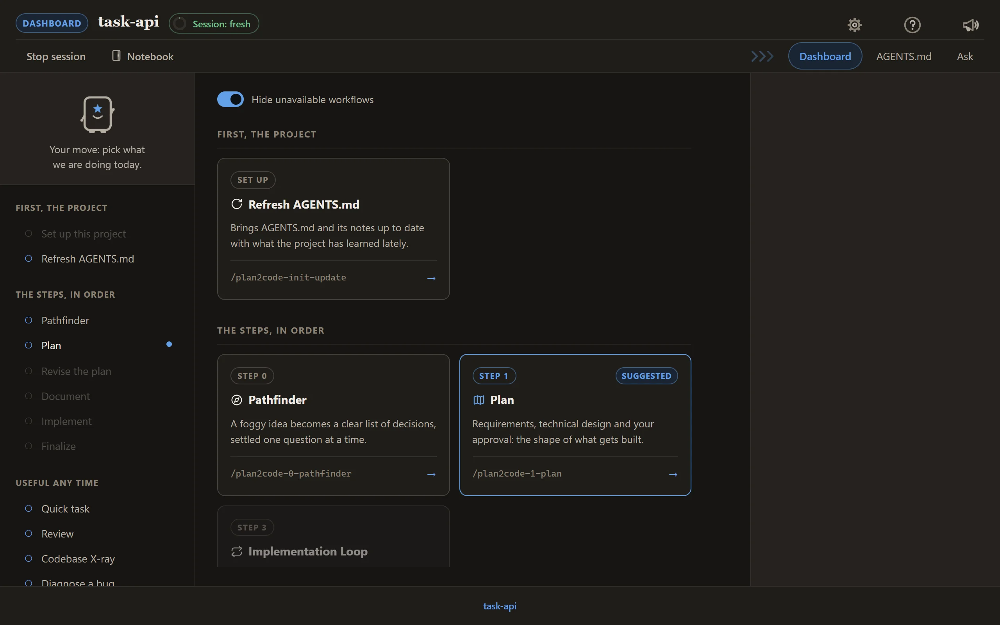
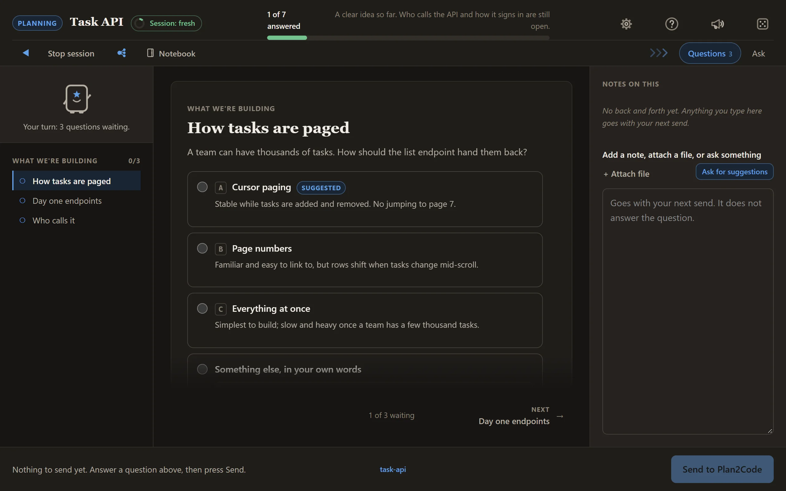
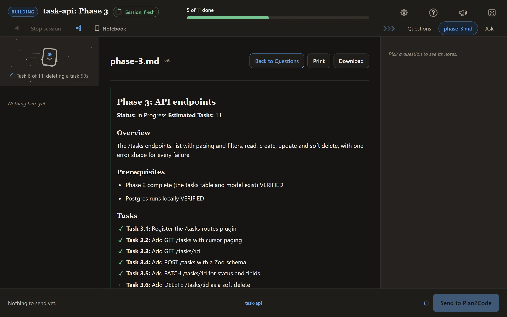
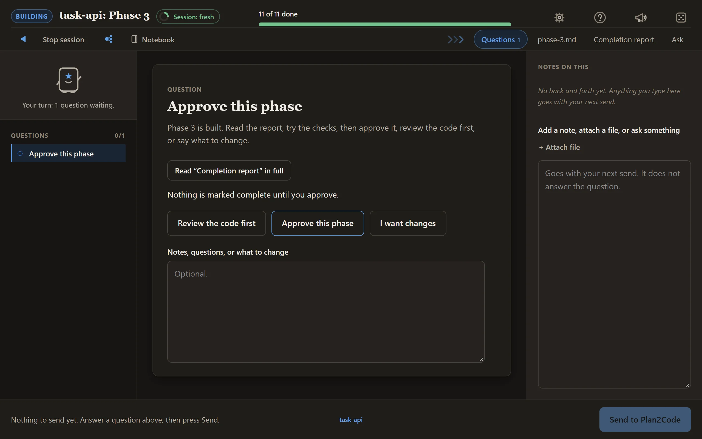
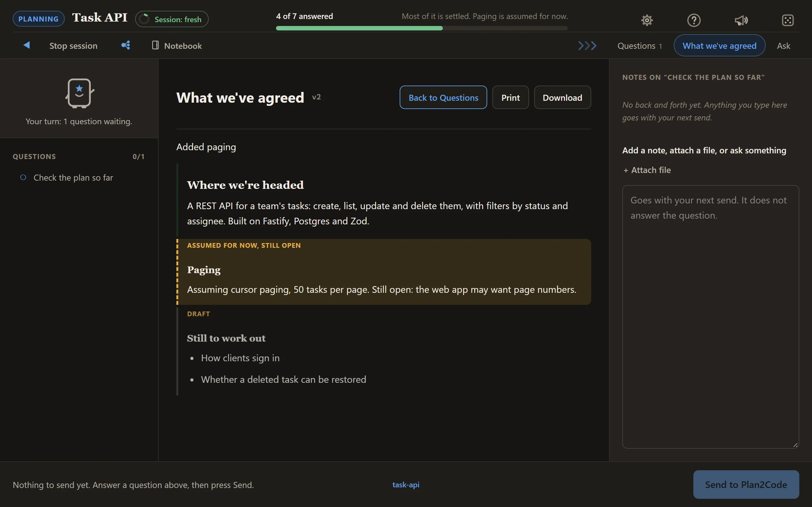
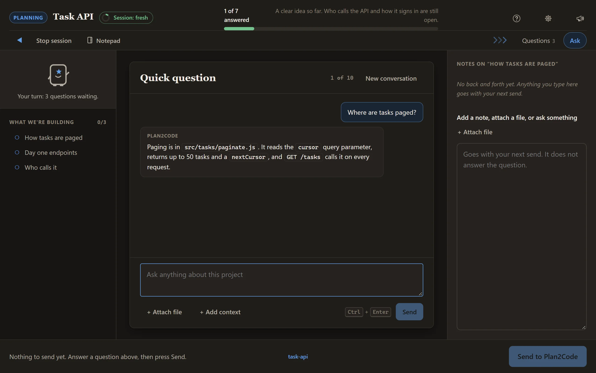
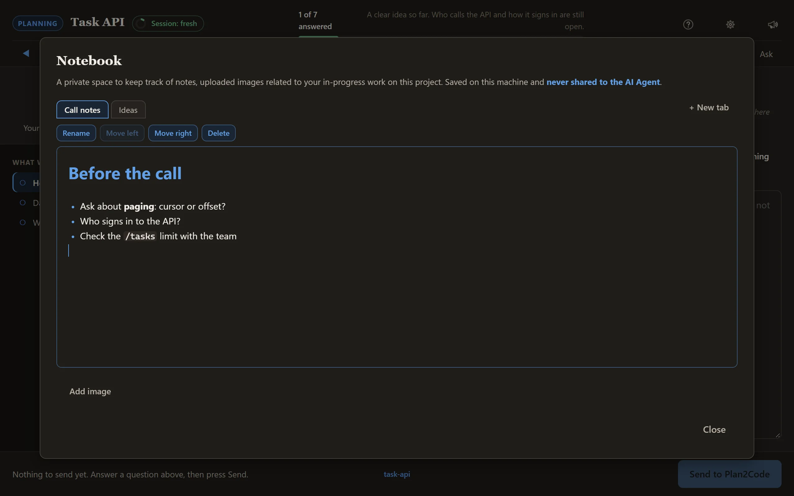
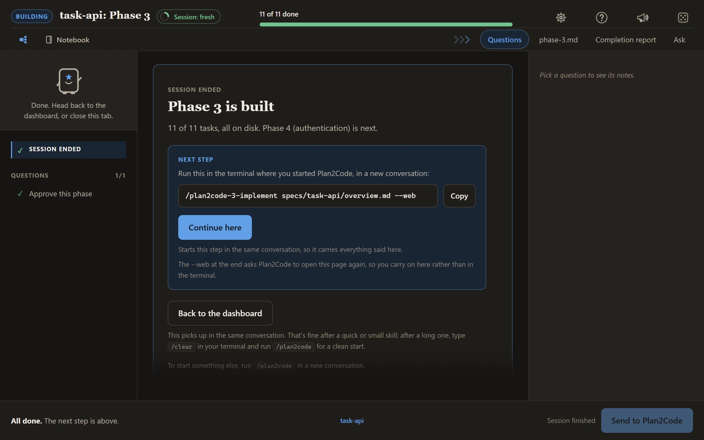
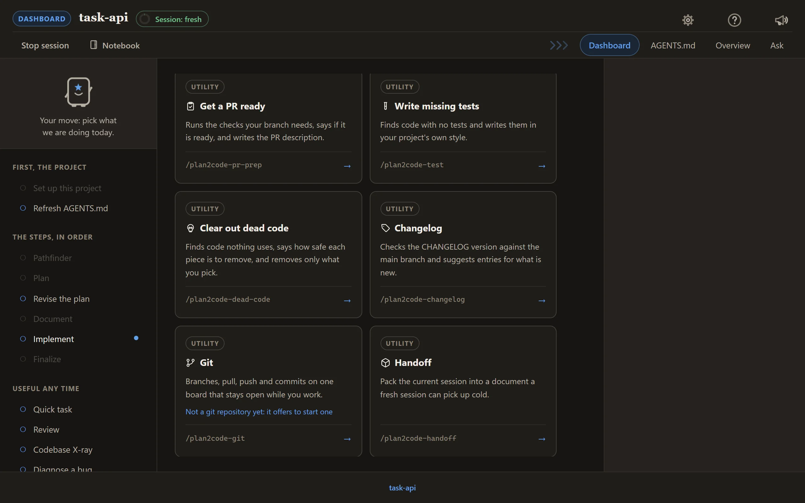
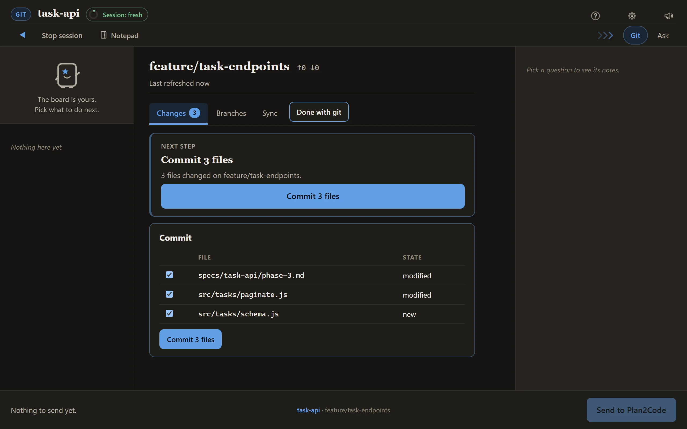

Plan it. Approve it.Let it build.
Plan2Code is a spec-driven workflow for AI coding agents. Its desktop app puts the plan, your agent and every sign-off in one window, and what you decide lands in your repo as plain files.




$ plan2code Plan2Code skills loaded > /plan2code Dashboard open in this window Suggested: Plan
Illustration: the app's window drawn around real screenshots of its pages. The terminal lines are an example.
The plan on the left. The agent on the right.
The desktop app opens on the dashboard and runs your agent in a terminal panel it owns. Every page of a session opens inside the window: questions, the living plan, the code review, the git board, your notebook. It is a small native app for Windows, macOS and Linux, and it talks to nothing but your own machine.
-
Dock the terminal where you want it
Right or bottom, collapsed to a strip, or maximized. A badge on a collapsed panel says when the agent may need you.
-
New Session, in one click
The app writes a brief from its own record of the session and starts a fresh agent on it, so a long conversation never gets to go stale.
-
Your agent, your model
A launch card asks which agent, model and effort to start on. Claude Code, Devin and Codex are built in, and any other agent CLI can be added.
-
It tells you when it is your move
A dot on the taskbar entry turns green when a question or a sign-off is waiting, so the window can sit behind your other work.
Start the loop. Go to lunch.
The Implementation Loop builds every remaining phase of a spec, one after another, while you do something else. It lives in the desktop app.
- A fresh agent for every phaseA long spec never grows into one tired conversation.
- The app decides when a phase countsIt reads the spec's marks, runs your quick check, then makes one local commit. It never pushes.
- A model per phaseThrifty for the boilerplate, Best for the hard part. A phase that crashes gets one retry, one step up.
- It reaches you where you areDiscord, Slack, Teams, Google Chat or any webhook, when it waits on you or finishes.
| Phase | Runs on | Build | Review | Quick check | Commit |
|---|---|---|---|---|---|
| 1Project setup | Thrifty | 4 tasks | clean | npm run build | 9c1e7f0 |
| 2Tasks model | Balanced | 5 tasks | 2 fixed | npm run build | a41c9e2 |
| 3API endpoints | Best | task 6 of 11 | fresh agent | npm run build | local only |
| 4Errors and docs | Thrifty | 6 tasks | fresh agent | npm run build | local only |
Illustration with example data. The message is the one the loop sends to your chat.
It would rather stop than guess. The loop ends on a stop screen, with the evidence, when:
- the phase's tests or your quick check fail
- a Critical finding is left after the re-check
- a task is blocked, or the spec conflicts with itself
- a commit is refused, by a pre-commit hook for example
- a staged file looks like a secret
- you press Stop, now or after this phase
Underneath, it is skills and files.
The app is optional. The workflow is a set of Agent Skills, and each step is a slash command that runs in your agent's own terminal. Every step writes Markdown the next one reads, so any session, any agent and any engineer can pick up cold.
- 0
Pathfinder optional
A foggy idea becomes a list of decisions, settled one question at a time.
/plan2code-0-pathfinderwrites pathfinder/map.md - 1
Plan
Requirements, your real codebase, the design. It will not finalize under 90% confidence.
/plan2code-1-planwrites PLAN-DRAFT.md - 2
Document
The plan becomes phases of small tasks, each phase readable on its own.
/plan2code-2-documentwrites overview.md, phase-N.md - 3
Implement
Builds the next phase task by task, ticks each one off, then asks for your sign-off.
/plan2code-3-implementwrites code, ticks checkboxes - R
Review any time
An independent second opinion. Every finding cites a file and a line.
/plan2code-reviewreads only, fixes what you pick - 4
Finalize
Checks every task against its spec, writes the summary, files the specs away.
/plan2code-4-finalizemoves to specs--completed/
The checkboxes are the state
Progress lives in the spec files, not in the chat. Close the window mid-phase and nothing is lost.
specs/task-api/ ├─ PLAN-DRAFT-2026-11-02.md ├─ overview.md phases 1 and 2 done ├─ phase-1.md [x] 4 of 4 ├─ phase-2.md [x] 5 of 5 ├─ phase-3.md [/] 5 of 11 │ [x] 3.5 PATCH /tasks/:id │ [/] 3.6 DELETE /tasks/:id │ [ ] 3.7 One error shape └─ phase-4.md [ ] 0 of 6
And a drawer of skills for any time
Each one is a card on the dashboard and a command in the terminal.
/plan2code-quick-taskToo small for the full process: a quick plan, then it builds./plan2code-diagnoseFinds a bug's cause and writes it up, without fixing it./plan2code-xrayExplains how and why an area of the code works./plan2code-pr-prepRuns the checks your branch needs and writes the PR description./plan2code-testFinds code with no tests and writes them in your project's style./plan2code-dead-codeFinds code nothing uses and removes only what you pick./plan2code-1b-revise-planRequirements moved mid-build: revise the specs, not the code./plan2code-handoffPacks a session into a document a fresh one resumes from./plan2code-gitBranches, pull, push and commits, asking before anything leaves./plan2code-changelogPicks the next version and drafts the entries.
The skills install into every agent the skills CLI supports, including Claude Code, Cursor, GitHub Copilot, Windsurf, Codex, Devin, OpenCode, Gemini CLI, Cline, Goose and Zed. Each skill asks whether you want its page or plain terminal prompts, so the whole workflow also runs over SSH with no window at all.
Four rules do most of the work.
Keep each session short.
Start fresh when the session meter turns red, and always before a big plan or build step. Planning context leaking into implementation is where most agent drift starts.
No code until the plan hits 90% confidence.
Under the threshold the agent keeps asking and keeps reading your code, and writes every assumption down where you can argue with it.
Checkboxes are the state, not the chat.
Progress lives in the spec files. Any agent, in any session, resumes cold from them.
Approve a phase to close it.
On the sign-off card, or by replying
approvedin the terminal. Nothing advances on a guess about what you meant.
More room to think than a prompt.
The page is served on 127.0.0.1 by a small program with zero dependencies. No account, and nothing leaves your computer.






That is Planny. He waves when it is your turn, walks while the agent works, and throws his arms up when you approve a phase.
One line installs all of it.
The skills, the plan2code command and, if you say yes, the desktop app. Run it again any time to update. MIT licensed.
Before you start
- Node.js 18 or newer. Check with
node --version. No Node? Get it from nodejs.org (the LTS download), or runwinget install OpenJS.NodeJS.LTSon Windows,brew install nodeon macOS, or usenvmon Linux. Then open a new terminal. - Git. Check with
git --version. The installer is fetched from GitHub with Git, and without it npm stops withspawn git ENOENT. No Git? Get it from git-scm.com, or runwinget install Git.Giton Windows,brew install giton macOS, or use your package manager on Linux. Then open a new terminal. - Start from your project. Open your terminal in the project you want to work on (
cdinto it) before you run anything. Plan2Code works on the folder you start it in. - Ways in.
plan2code(Claude Code, Devin or Codex), or type/plan2codein your agent ($plan2codein Codex). - No agent yet? Install Claude Code, Codex or Devin first, or let the
plan2codecommand's setup page walk you through it.
npx --allow-git=all git+https://github.com/jparkerweb/plan2code.git
- Then, from your project, run
plan2code. With the app installed it opens the app, andplan2code --classickeeps the agent in your terminal. Already inside your agent? Type/plan2code($plan2codein Codex). - The app is checked before it is kept. The installer downloads the build for your system (Windows x64, macOS on Apple silicon or Intel, Linux x64) and verifies it against the release's checksum list. This first release is unsigned, so your system may ask you to allow it once. Read the app guide.
- Back at your prompt with nothing printed? The installer always opens a menu, so no output at all means npm could not reach the repository and hid the reason.
git ls-remote https://github.com/jparkerweb/plan2code.gitshows why.